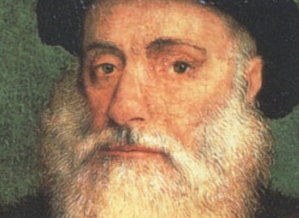
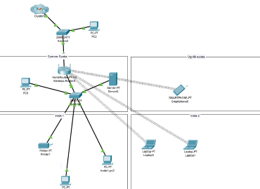
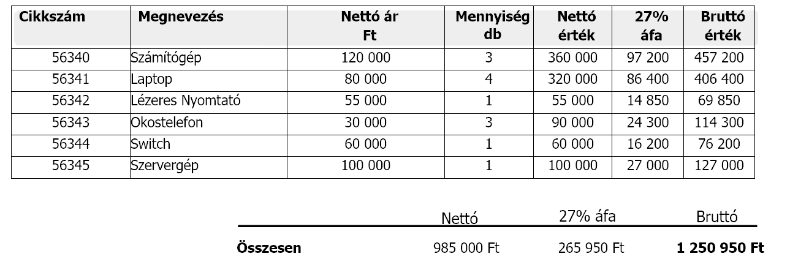
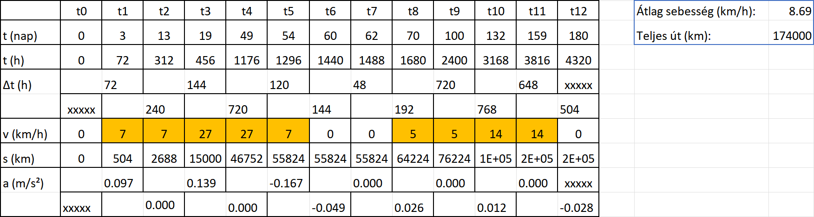
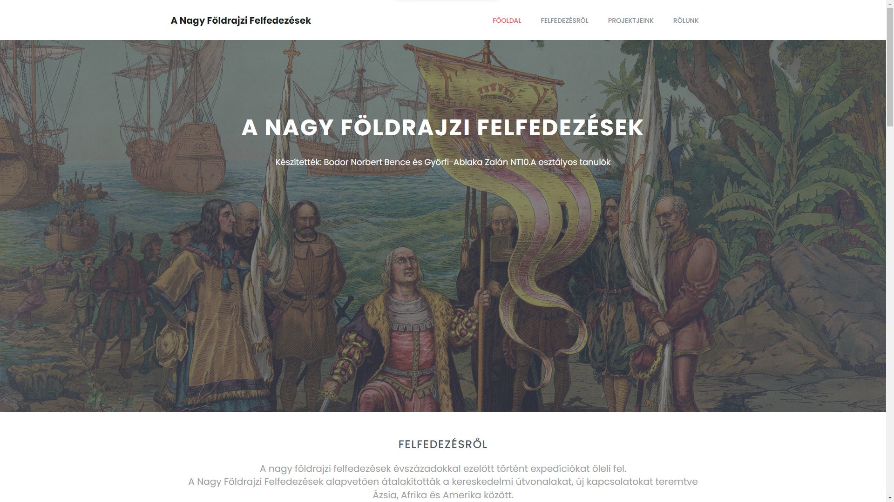
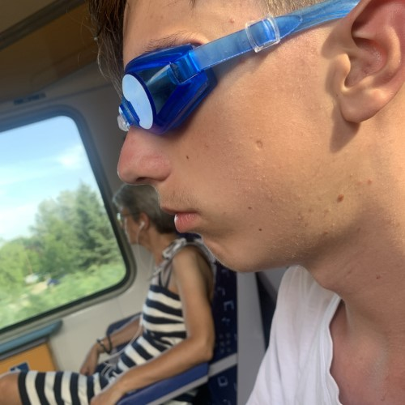

Készítették: Bodor Norbert Bence és Györfi-Ablaka Zalán NT10.A osztályos tanulók
Olasz származású tengerész és felfedező volt ki, 1492-ben vezette azt az expedíciót, amely során felfedezték az Amerikai kontinenst. Igaz, hogy azt hitték Indiát kutatták fel, de ezzel megnyitottak egy új világot, a felfedezések kapuját.
Portugál felfedező volt, ki 1497-ben indult el, és 1498-ban érte el Indiát, megnyitva a tengeri útvonalat Európából az indiai kereskedelmi központok felé. Jelentős hatása lett az óceáni kereskedelemre és az európai hatalmak Ázsiai terjeszkedésére.
Magellán Ferdinánd, az a portugál felfedező volt, aki 1519-ben indította el az első Földet körülhajózó expedíciót. 5 hajóval indult útnak, bár ő maga az út során életét vesztette és 1 hajó tért csak vissza, de sikerült bebizonyítania, hogy a Föld gömb alakú.
Itt található meg az összes tantárgy amiből kaptunk projektet, és róluk egy kis rövid leírás.
A kiválasztott felfedezőről készíteni egy prezentációt.

Készíteni kell digitális blogot Vasco da Gama portugál felfedező indiai utazásáról!

Egy képzeletbeli hajózási társaság irodáját kell lemodellezni.

1. Árajánlat készítése a hálózat kiépítésére
2. Készíteni kell e-számlát a kivitelezéséről

Egy hajó mozgását jellemző grafikont kell elkészíteni.

1. Készíteni kell egy weboldalt
2. Készíteni kell egy játékot Pythonba

Bodor Norbert Bence
Györfi-Ablaka Zalán